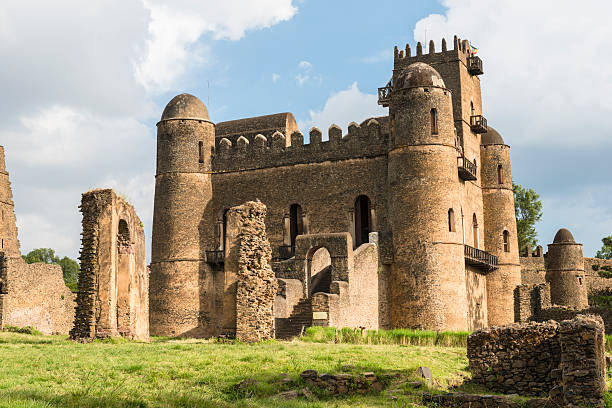

I believe that life is a journey filled with exciting adventures, and I cherish the experiences that allow me to explore new places and cultures. One of my most memorable adventures was visiting Fasil Castle in Gondar. The castle, with its stunning architecture and rich history, was truly remarkable. Exploring its grounds allowed me to connect with my cultural heritage and appreciate the beauty of Ethiopia's historical landmarks.

Fasil Castle
Some of the highlights from my adventure.
Looking ahead, I have several exciting adventures planned such as:
- Exploring the Simien Mountains
- Visiting Axum
- Visiting Lalibela
- Traveling to Jerusalem